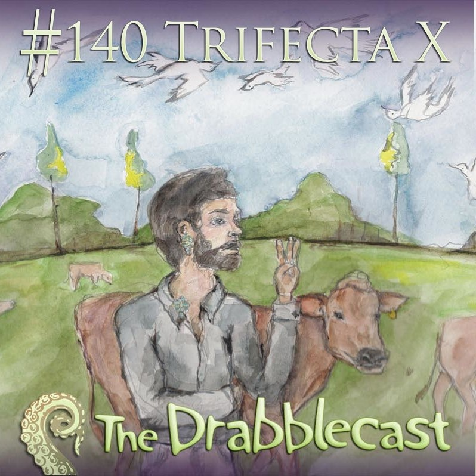

Thursday, December the 3rd, 2009
back to: title, date or indexes
Oddly coincident with Mr Key's presence in the United States, the latest edition of the Drabblecast features a Hooting Yard story. Bubbles Surge From Froth is read by Norm Sherman, the man who made the words “magnetic mute blind love monkeys” sound so eerie and lascivious.
Norm gives a splendid rendition once again, so many thanks to him, and to whomsoever is responsible for the delightful picture of the captain Communist, smoking a cigarette and leaning insouciantly against a cow while birds flock in the sky above.
